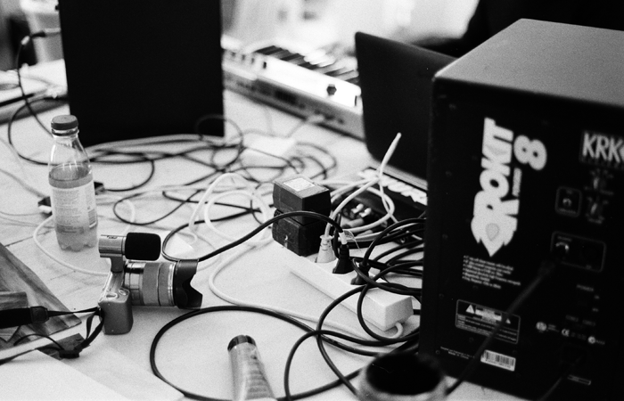

Nemoy André Seiler — www.schtubu.com
Rebukaner Rebekka Schaerer — www.rebukaner.tumblr.com
Clinker Yannik Frich — www.soundcloud.com/clincker
ATLAS studio Claudio Gasser — www.atlasstudio.ch
Melodiesinfonie Kevin Wettstein — www.soundcloud.com/melodiesinfonie
Mood-Wood Marc Zenhäusern — www.mood-wood.ch
Nicola Cassetti Marco Nicolas Heinzen — www.soundcloud.com/nicola_casetti
fichte Mathias Forbach — www.fichtre.ch
Das Filter Kilian Spinnler — www.dasfilter.ch
